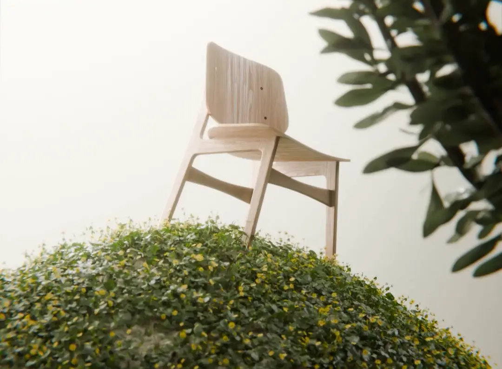

Uma cadeira.Quatro estações.
Cadeira de madeira com almofada de linho trocável em quatro cores. A peça fica com você; a cor muda quando você mudar.
Pedir a minha PradoEnjoou da sala?Troque a estação.
Não a cadeira. Todo móvel parece certo na loja; seis meses depois, a sala já cansou dele.
A cadeira fica.A cor muda.
Quando a casa pedir outra cor, você pede só a almofada nova. Ela encaixa em segundos.
Hoje Musgo.No inverno, Lavanda.
A estrutura é uma só, feita para durar. É a parte que cansa que você troca.
Montar a casa é bom até o terceiro móvel que não combina com nada. E trocar tudo só porque enjoou da cor parece desperdício.
- 01A cadeira linda do anúncio chegou bamba.
- 02A cor que era tendência no ano passado hoje parece velha.
- 03Na loja tudo é cinza, bege ou cinza-bege.
- 04Você não sabe se a cor vai funcionar na luz da sua sala.
Benefícios
- 01A sala muda de clima sem móvel novo.Troque só a almofada
- 02Você escolhe a cor sem medo.Se enjoar, troca
- 03Uma peça que você não esconde da visita.Madeira e linho
- 04À mesa, em dupla ou sozinha num canto.Funciona em todo lugar
- 05Compra uma vez a parte que dura.E troca a parte que cansa
Uma outratrama.
A mesma ideia, em fio: a Trama tem estrutura metálica e assento tecido à mão. [INSERIR DISPONIBILIDADE]
Escolha a estação.
O WhatsApp abre com o pedido escrito. A gente confirma medidas, frete e pagamento antes de qualquer cobrança.
- Preço
- [INSERIR PREÇO] · almofada avulsa [INSERIR]
- Medidas
- [INSERIR A × L × P]
- Materiais
- Madeira [INSERIR ESPÉCIE E ACABAMENTO] · almofada de linho
- Prazo
- [INSERIR PRODUÇÃO + ENTREGA]
Objeções
Mas e se a cor não ficar boa na minha sala?
Você troca só a almofada. A estrutura não muda.
Mas comprar móvel pelo WhatsApp dá medo…
Você conversa com uma pessoa, recebe fotos e confirma tudo antes de pagar.
Mas cadeira de madeira é dura…
A almofada de linho existe para isso. [INSERIR ESPESSURA/ENCHIMENTO]
Mas e se chegar com defeito?
[INSERIR POLÍTICA DE TROCA E GARANTIA]
Antes de pedir.
Posso comprar só a almofada depois?
Pode. É a ideia da Prado: a cadeira fica, a cor muda.
Quanto tempo leva para chegar?
[INSERIR PRAZO]
A almofada é lavável?
[INSERIR CUIDADOS DO LINHO]
Entregam na minha cidade?
[INSERIR REGIÕES]
Quais as formas de pagamento?
[INSERIR]
Dá para ver a cor antes?
[INSERIR — ex.: amostra de tecido]
A cadeira é para sempre.A cor é para agora.
PS: escolha a estação de hoje sem medo. Quando a casa pedir outra, você troca só a almofada.